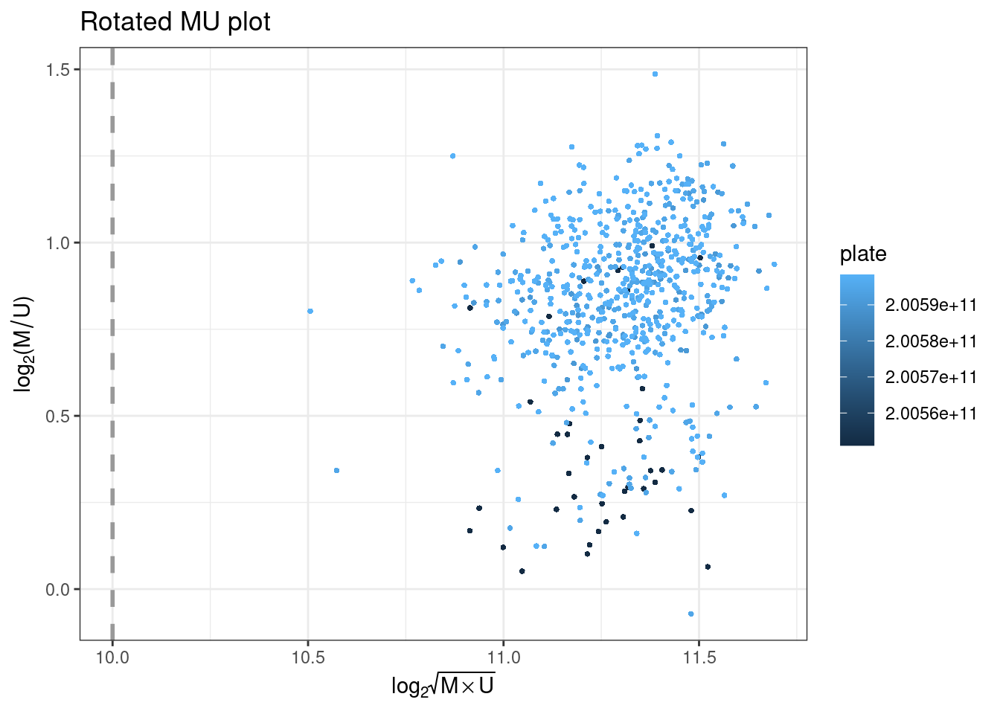
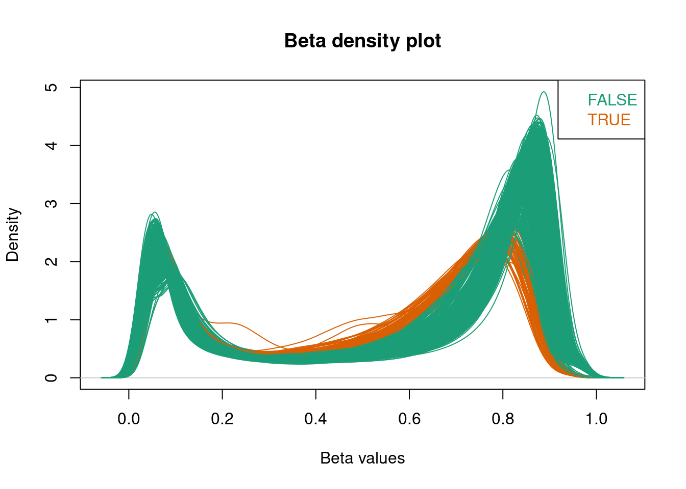
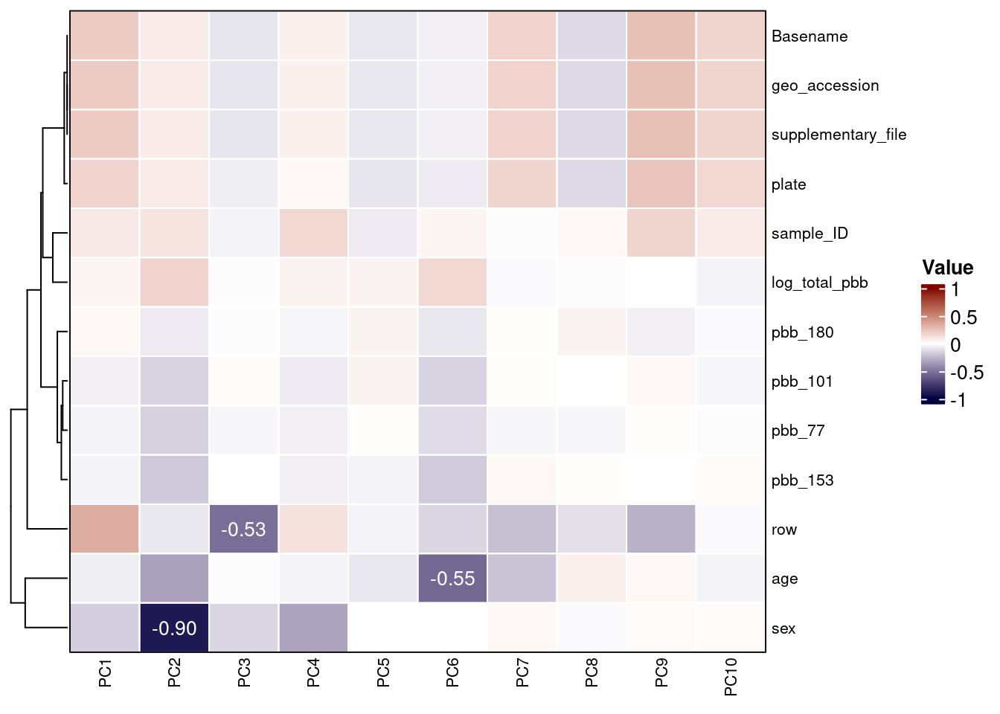
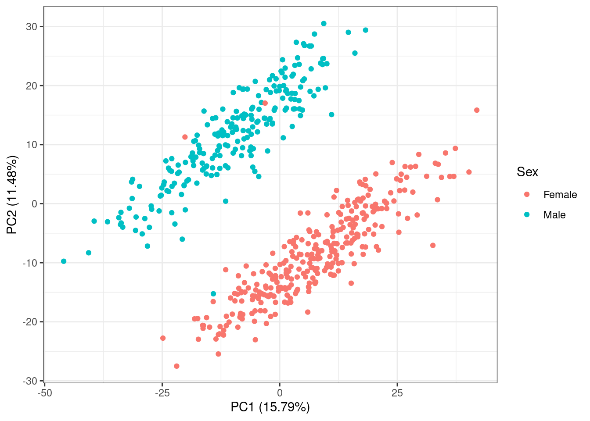
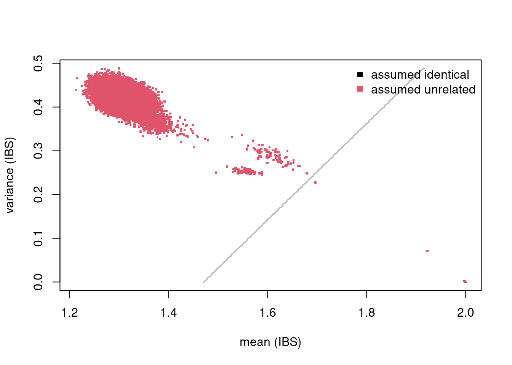

Loading DNAm data
Summarizing IDATs
The MethylAid10
package, which will be used for quality control in this workflow,
requires the targets data frame to contain a Basename
variable that points to IDAT file names. Sometimes, data comes with a
sample sheet to facilitate this, but in this example the information is
extracted from the supplementary file column instead.
## [1] "GSM3228562_200550980002_R01C01_Grn.idat" "GSM3228563_200550980002_R02C01_Grn.idat" "GSM3228564_200550980002_R03C01_Grn.idat"
## [4] "GSM3228565_200550980002_R04C01_Grn.idat" "GSM3228566_200550980002_R05C01_Grn.idat" "GSM3228567_200550980002_R06C01_Grn.idat"The following sample quality control steps will also require the BiocParallel package. Using parallel processing and/or batches will reduce both memory load and run-times when extracting intensities from IDAT files. Please see the MethylAid vignette for more details.
The available number of cores is set usnig
MulticoreParam, and IDATs are summarized using the
summarize function.
BPPARAM <- MulticoreParam(6)
sData <- MethylAid::summarize(targets, batchSize=50, base="../GSE116339/IDATs")Creating an RGset
In addition to the sData object, which is used by
MethylAid, it is useful to also create an
RGChannelSetExtended object, which contains more extensive
information on the data. Here, we use read.metharray.exp()
from minfi9
but, since this has not been updated for the more recent arrays, we
advise monkey patching the internal .guessArrayTypes
function, with the appropriate array and annotation.
.guessArrayTypes <- function(nProbes) {
if (nProbes > 850000) {
# EPIC v2 array
arrayAnnotation <- c(array = "IlluminaHumanMethylationEPIC", annotation = "20a1.hg38")
} else if (nProbes > 622000) {
# EPIC (850k) array
arrayAnnotation <- c(array = "IlluminaHumanMethylationEPIC", annotation = "ilm10b4.hg19")
} else if (nProbes > 480000) {
# 450k array
arrayAnnotation <- c(array = "IlluminaHumanMethylation450k", annotation = "ilmn12.hg19")
} else {
# 27k array
arrayAnnotation <- c(array = "IlluminaHumanMethylation27k", annotation = "ilmn12.hg19")
}
arrayAnnotation
}
environment(.guessArrayTypes) <- asNamespace("minfi")
assignInNamespace(".guessArrayTypes", .guessArrayTypes, ns = "minfi")Then, proceed using BiocParallel and minfi
to read in the IDAT files.
Reading data in parallel is subject to errors and debugging is often
difficult. Recently, BiocParallel
has been extended with a comprehensive set of functions for debugging on
various parallel architectures. If problems arise, we recommend using
BatchJobsParam() with the log=TRUE option in
order to facilitate resolution.
Our data is now an RGset object that can used for
visualization. You can see below that inside this object the
colData holds the same information as targets,
and that there are 5 assay layers. The annotation
information tells us that the methylation was measured using a EPIC
array and that hg19 is the reference genome.
## class: RGChannelSetExtended
## dim: 1052641 60
## metadata(0):
## assays(5): Green Red GreenSD RedSD NBeads
## rownames(1052641): 1600101 1600111 ... 99810990 99810992
## rowData names(0):
## colnames(60): GSM3228562_200550980002_R01C01 GSM3228563_200550980002_R02C01 ... GSM3228620_200590490021_R07C01
## GSM3228621_200590490021_R08C01
## colData names(14): sample_ID geo_accession ... Basename filenames
## Annotation
## array: IlluminaHumanMethylationEPIC
## annotation: 20a1.hg38Beta values
In order to further visualize the data, we store the beta values
using the getBeta() function from minfi.
The type="Illumina" option adds 100 to the denominator of
the beta-value calculation, preventing NA values being recorded when the
methylated and unmethylated signal are both 0.
On some environments, this function returns a list. In that case, the
beta-values can be extracted using betas$completeObs.
It can also be advisable to round the beta values to 4 significant figures, which both reduces the data size and provides a realistic measure of the available precision.
Now, betas contains beta values for each measured probe
and sample.
## [1] 866836 60## GSM3228562_200550980002_R01C01 GSM3228563_200550980002_R02C01 GSM3228564_200550980002_R03C01 GSM3228565_200550980002_R04C01
## cg18478105 0.0504 0.0000 0.0432 0.0396
## cg09835024 0.0745 0.1027 0.0548 0.0499
## cg14361672 0.6650 0.6541 0.6505 0.6050
## cg01763666 0.6506 0.6182 0.6523 0.6663
## cg12950382 0.8633 0.8001 0.8153 0.8313
## GSM3228566_200550980002_R05C01
## cg18478105 0.0454
## cg09835024 0.0750
## cg14361672 0.7440
## cg01763666 0.6309
## cg12950382 0.7643MethylAid
Control probes
MethylAid plots to visualize sample quality are included
in the DNAmArray package and their use is outlined
below.
They rely on the following qcProbes object that
specifies the control probes.
qcProbes = list(
BSI = "^BISULFITE CONVERSION I$",
BSII = "^BISULFITE CONVERSION II$",
EC = "^EXTENSION$",
SPI = "^SPECIFICITY I$",
HYB = "^HYBRIDIZATION$",
NP = "^NON-POLYMORPHIC$",
SPII = "^SPECIFICITY II$",
TR = "^TARGET REMOVAL$",
SC = "^STAINING$",
NC = "^NEGATIVE$"
)They also rely on array specific thresholds, which we advise to set on the basis of the following table:
| Array | MU | OP | BS | HC | DP |
|---|---|---|---|---|---|
| 450k | 10.5 | 11.75 | 12.75 | 13.25 | 0.95 |
| EPIC | 10 | 12 | 11.75 | 12.75 | 0.95 |
| EPIC v2 | 10.5 | 12.5 | 12.75 | 13.25 | 0.95 |
The example data uses the EPIC array and the following thresholds
Plots
All plots can be coloured by a variable in targets,
specified by the col argument.
plotMU plots a rotated MU plot. This shows the median
methylated and unmethylated log2 intensities per sample, and flagging
low-intensity outliers.

plotOP plots the sample-dependent overall quality
control on the basis of non-polymorphic (NP) control probes.
NP control probes query each of the four nucleotides in a non-polymorphic region of the bisulfite genome. Signal intensity from these probes in the red (A and T) and green (C and G) channels can then be used to test overall performance of the assay, from amplification to detection. Intensity should be high in the red channel for NP probes querying A and T nucleotides, and high in the green channel for NP probes querying G and C nucleotides. The intensities for the relevant channel for NP probes are then combined and plotted per sample, where they should be above the specific threshold.

plotBS assesses bisulfite conversion efficiency using
control probes, identifying poorly converted samples. Type I BC control
probes monitor the efficiency of the bisulfite conversion. If the
conversion reaction was successful, the ‘C’ (converted) probes will be
extended, but if the sample has unconverted DNA, the ‘U’ (unconverted)
probes are extended instead.
Performance of the BC control probes C1 and C2 is monitored in the green channel, and C3 and C4 are monitored in the red channel. The intensities for the relevant channels are then combined for all BC control probes and plotted per sample to ensure they are above the specified threshold.

plotHC uses hybridization controls to assess the
hybridization step using synthetic targets, which complement the array
perfectly. These synthetic targets are present in the hybridization
buffer (RA1) at three concentration levels, and their performance is
only monitored in the green channel. The difference in green intensity
between the high (H) and low (L) concentration is combined and can be
plotted to ensure it is above the specified threshold.
plotDP is the last MethylAid plot we provide. This
function instead takes the RGset as input, to enable the
user to specify both how visually distinct from the background they
consider a detected signal (detP argument is the detection
p-value) and what proportion of probes they want to be meeting this
criterion (threshold is this proportion). The default we
suggest for all arrays is 0.01 (detP) and 0.95 (threshold), but this can
be adjusted.
This plot uses negative control probes, which are randomly permuted sequences that should not hybridize to the DNA template. The mean signal of these probes defines the background signal. This plot therefore show the fraction of probe visually distinct from the background signal in each sample, coloured by array number.
Outliers
On the basis of the above thresholds, outliers can be extracted using
the get_outliers function. The resulting table shows an
indicator of which quality control step was failed.
## MU OP BS HC DP
## GSM3228562_200550980002_R01C01 FALSE FALSE FALSE TRUE FALSE
## GSM3228577_200550980025_R01C01 FALSE FALSE FALSE TRUE FALSEOutliers can then be removed from targets before
proceding.
## [1] 58 13Beta density plots
Using densityPlot() from minfi,
we can visualize the per sample average beta-value distribution. This
gives us a global impression of the data and allows us to identify
possible anomalous samples. We expect this distribution to be bimodal
with the peaks representing methylated and unmethylated signals. Any
centre peaks should be further investigated for problems, such as
ambiguous mapping.
Centre peaks can be identified using a beta_outlier
object, which flags any samples with high beta values in the central
part of the distribution. Alternatively, a named boolean vector of the
samples can be used to flag a specific sample.
beta_outlier <- ifelse(colSums(betas > 0.3 & betas < 0.5) > 120000, T, F)
RGset$beta_outlier <- beta_outlier
beta_outlier[1:5]## GSM3228562_200550980002_R01C01 GSM3228563_200550980002_R02C01 GSM3228564_200550980002_R03C01 GSM3228565_200550980002_R04C01
## FALSE FALSE FALSE FALSE
## GSM3228566_200550980002_R05C01
## FALSEThese are then coloured in the beta values plot.

Any flagged samples can then be removed using the sample name.
## [1] "GSM3228582_200550980025_R06C01"targets <- targets[!rownames(targets) %in% flagged_samples, ]
RGset <- RGset[,colnames(RGset) %in% rownames(targets)]
betas <- betas[,colnames(betas) %in% rownames(targets)]Principal components analysis
Calculate PCs
Principal components (PCs) of the beta values can be calculated using
prcomp.
## Importance of first k=10 (out of 57) components:
## PC1 PC2 PC3 PC4 PC5 PC6 PC7 PC8 PC9 PC10
## Standard deviation 38.1497 14.16558 10.03321 8.36472 7.84595 7.49317 5.46166 5.28598 5.13590 4.9653
## Proportion of Variance 0.5373 0.07409 0.03717 0.02583 0.02273 0.02073 0.01101 0.01032 0.00974 0.0091
## Cumulative Proportion 0.5373 0.61144 0.64860 0.67444 0.69717 0.71790 0.72891 0.73923 0.74896 0.7581Screeplot
Variance explained by each PC can be calculated.
var_explained =
data.frame(PC = 1:ncol(betas),
var_explained = pca$sdev^2 / sum(pca$sdev^2))[1:ncol(pca$x),]
var_explained## PC var_explained
## 1 1 0.537349884
## 2 2 0.074087375
## 3 3 0.037166859
## 4 4 0.025833196
## 5 5 0.022728271
## 6 6 0.020730371
## 7 7 0.011013480
## 8 8 0.010316377
## 9 9 0.009738856
## 10 10 0.009102599This can be plotted in a screeplot to visualize the structure of the DNAm data.
var_explained %>%
ggplot(aes(x=PC, y=var_explained)) +
geom_line() +
geom_point(color='grey5', fill='#6DACBC', shape=21, size=3) +
scale_x_continuous(breaks=1:ncol(pca$x)) +
xlab("Principal Component") +
ylab("Proportion of variance explained") +
theme_bw()
Heatmap
Any constant variables are removed from the heatmap, as they will not explain variance in the data.
plot_vars <- apply(targets, 2, function(x) sd(as.numeric(factor(x)), na.rm=T))
plot_vars <- names(plot_vars[!plot_vars %in% c(NA, 0)])
plot_vars## [1] "sample_ID" "geo_accession" "sex" "age" "log_total_pbb" "pbb_153"
## [7] "pbb_77" "pbb_101" "pbb_180" "supplementary_file" "plate" "row"
## [13] "Basename"All variables are then converted to numeric and correlations between them and the PCs are calculated.
heatmap_df <- apply(heatmap_df, 2, function(x) as.numeric(factor(x)))
cxy <- round(cor(pca$x, scale(heatmap_df), use="pairwise.complete.obs"),2) A heatmap can then be used to visualize these correlations and uncover measured variables that explain a large proportion of DNAm variance.
col_fun <- colorRamp2(c(-1, 0, 1), c("#000042", "white", "#800000"))
Heatmap(
t(cxy),
col = col_fun,
border = 'grey5',
cluster_columns = FALSE,
show_row_dend = TRUE,
show_column_dend = FALSE,
name = "Value",
row_names_gp = gpar(fontsize = 8),
column_names_gp = gpar(fontsize = 8),
cell_fun = function(j, i, x, y, width, height, fill) {
grid.rect(x, y, width, height,
gp = gpar(col = "white", lwd = 1, fill = NA))
grid.text(ifelse(abs(t(cxy)[i,j]) > 0.4,
sprintf("%.2f", round(t(cxy)[i, j], 2)),
""),
x, y, gp = gpar(fontsize = 10, col = "white"))
}
)
Plot
In order to further investigate flagged variables, we can add the PCs
to the targets data frame.
PCs can then be plotted against each other, coloured by flagged variables.
Strong batch effects can be seen, coloured by array number.
pc_df %>%
ggplot(aes(x = PC1, y = PC2, color = plate)) +
geom_point(size = 1.5) +
labs(x = paste0("PC1 (", round(100*var_explained[1,2], 2), "%)"),
y = paste0("PC2 (", round(100*var_explained[2,2], 2), "%)"),
color = "Array") +
theme_bw()The second PC is mostly linked to sex differences.
pc_df %>%
ggplot(aes(x = PC1, y = PC2, color = sex)) +
geom_point(size = 1.5) +
labs(x = paste0("PC1 (", round(100*var_explained[1,2], 2), "%)"),
y = paste0("PC2 (", round(100*var_explained[2,2], 2), "%)"),
color = "Sex") +
theme_bw()
Checking Sample Relationships
Annotations
omicsPrint12 is a package we developed to detect data linkage errors through inspecting sample relations in multiple omics studies.
Manifests can be downloaded from the Zhou lab GitHub page15 for all commonly used arrays and reference genomes. For this example, we use SNP annotations downloaded for the EPIC array and the hg19 genome.
## Rows: 865918 Columns: 66
## ── Column specification ───────────────────────────────────────────────────────────────────────────────────────────────────────────────────
## Delimiter: "\t"
## chr (2): CpG_chrm, probeID
## dbl (2): CpG_beg, CpG_end
## lgl (62): MASK_general_AFR, MASK_snp5_AFR, MASK_general_EAS, MASK_snp5_EAS, MASK_general_EUR, MASK_snp5_EUR, MASK_general_SAS, MASK_snp...
##
## ℹ Use `spec()` to retrieve the full column specification for this data.
## ℹ Specify the column types or set `show_col_types = FALSE` to quiet this message.Columns of interest include:
- cpg - ID of the probe for the CpG
- chr - Chromosome where the CpG is located
- start - Start position of the CpG
- end - End position of the CpG
snp_cpgs <- snp_cpgs %>%
dplyr::select(
cpg = probeID,
chr = CpG_chrm,
start = CpG_beg,
end = CpG_end,
MASK_snp5_EUR
) %>%
mutate(
chr = substr(chr,4,5)
)
snp_cpgs <- (snp_cpgs %>%
dplyr::filter(MASK_snp5_EUR == TRUE))$cpg
print(paste0("There are ", length(snp_cpgs),
" CpGs containing common European SNPs"))## [1] "There are 28152 CpGs containing common European SNPs"Betas can then be subset to include only these CpG probes of interest.
## [1] 28152 57##
## TRUE
## 57Assumed relations
Create a data frame of all pairwise sample comparisons.
## idx idy
## 1 GSM3228563_200550980002_R02C01 GSM3228563_200550980002_R02C01
## 2 GSM3228564_200550980002_R03C01 GSM3228563_200550980002_R02C01
## 3 GSM3228565_200550980002_R04C01 GSM3228563_200550980002_R02C01
## 4 GSM3228566_200550980002_R05C01 GSM3228563_200550980002_R02C01
## 5 GSM3228567_200550980002_R06C01 GSM3228563_200550980002_R02C01
## 6 GSM3228568_200550980002_R07C01 GSM3228563_200550980002_R02C01Sample names are saved, as a reference for which pairs exist.
relations$sample_name_x <- targets[relations$idx, "sample_ID"]
relations$sample_name_y <- targets[relations$idy, "sample_ID"]A relation_type variable is then set as identical if the
samples come from the same individual and unrelated
otherwise. We see that the 59 pairs comparing the same sample are set as
identical.
relations$relation_type <- "unrelated"
relations$relation_type[relations$sample_name_x == relations$sample_name_y] <- "identical"
table(relations$relation_type)##
## identical unrelated
## 57 3192Genotyping
The function beta2genotype from omicsPrint
genotypes the observations by measuring homozygous or heterozygous
alleles at these SNP probes. The arguments specified are:
betas- a beta matrix of probes possibly affected by SNPsna.rm- whether to drop CpGs for which no clustering is observedminSep- the minimal cluster separationminSize- the size of the smallest cluster as a percentagecenters- centers of clustersassayName- the name of the assay to be used
genotype <- beta2genotype(betas_snps,
na.rm=TRUE,
minSep = 0.25,
minSize = 5,
centers = c(0.2, 0.5, 0.8),
assayName=NULL)
str(genotype)## int [1:1128, 1:57] 1 2 1 3 1 1 2 3 1 3 ...
## - attr(*, "dimnames")=List of 2
## ..$ : chr [1:1128] "cg12213037" "cg19405842" "cg24925741" "cg07584620" ...
## ..$ : chr [1:57] "GSM3228563_200550980002_R02C01" "GSM3228564_200550980002_R03C01" "GSM3228565_200550980002_R04C01" "GSM3228566_200550980002_R05C01" ...alleleSharing can then assess the relationships between
different individuals, which can be unrelated, twins, or identical. This
uses identity by state (IBS), a genetic similarity measure that compares
at a single locus the genotypes between two individuals and counts the
number of alleles shared (0, 1 or 2).Essentially, if a sample is the
same then the mean IBS should be 2 (alleles) and the variance of this
should be low (close to 0).
## Hash relations## Pruning 1128 SNPs ...## 0 SNPs removed because of low call rate!## 0 samples removed because too few SNPs called!## Using 1128 polymorphic SNPs to determine allele sharing.## Running `square` IBS algorithm!## 58 of 1653 (3.51%) ...## mean var colnames.x colnames.y relation
## 1 2.000000 0.0000000 GSM3228563_200550980002_R02C01 GSM3228563_200550980002_R02C01 identical
## 2 1.333333 0.4229518 GSM3228564_200550980002_R03C01 GSM3228563_200550980002_R02C01 unrelated
## 3 1.333333 0.4158533 GSM3228565_200550980002_R04C01 GSM3228563_200550980002_R02C01 unrelated
## 4 1.359929 0.4204692 GSM3228566_200550980002_R05C01 GSM3228563_200550980002_R02C01 unrelated
## 5 1.335106 0.4306387 GSM3228567_200550980002_R06C01 GSM3228563_200550980002_R02C01 unrelated
## 6 1.322695 0.4139654 GSM3228568_200550980002_R07C01 GSM3228563_200550980002_R02C01 unrelatedIdentify mismatches
The mean and variance of IBS can then be visualised using the
inferRelations() function. Genetically similar sample
comparisons will be plotted closer to the bottom, right of the graph,
and those that are genetically dissimilar are in the top, left. A table
of mismatches gives an overview of any identified.
## Assumed relation
## Predicted relation identical unrelated
## identical 57 .
## unrelated . 1596
##
## identical unrelated
## identical 0 0
## unrelated 0 0Since there are no twins or relatives in our data, all observations are shown as unrelated. In data with sample relationships, this would be shown in the above graph as green or black clusters12. It is important to carry out this type of visualization before probe-filtering as otherwise the genotyping will be based on very few SNPs.